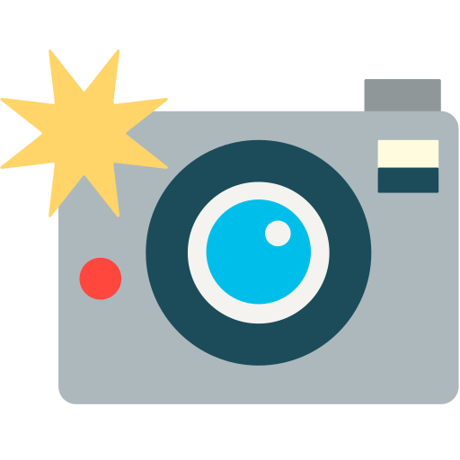

My Interests
Here is more information about me and my interests.
My Hobbies and Passions

Photography
I love capturing beautiful moments and landscapes with my camera.
Cooking
I enjoy experimenting with new recipes and creating delicious meals for my family and friends.
Video Gamming
I love playing video games and have been a gamer since I was a kid.
Reading
I'm an avid reader and love getting lost in a good book.
Making Money
I make money from side hustles and investing.
Facts about my passions
- I am a parent of three children, meaning I am a seasoned pro in parenting. I am a master at diffusing tantrums. I've got a seemingly endless supply of patience when juggling life with three not-so-little humans. In short, I am a certified expert at the most challenging and hilarious job on the planet.
- Six years ago, I made a bold move and left my birth country, Romania. I packed my bags, bid farewell to loved ones, and embarked on a thrilling adventure full of new experiences, challenges, and endless cups of Tetley's with Milk that remained undrunk.
- I started travelling the world when I was 17: Italy, France, Monaco, and Spain. So it's safe to say I am a true citizen of the world, and I am pretty sure the next adventure is right around the corner.
- I have a wide range of interests that span the worlds of history, economics, and technology. My curiosity knows no bounds, and I'm always eager to learn something new. My family tells me I'm a walking encyclopaedia, and they always need me while doing their history homework.
- When I am not busy slaying dragons in Dota 2 or conquering the world in Counterstrike, I'm most likely hiding in my den and creating awesome YouTube content for my subscribers.
- When taking on complex projects, I am the ultimate Boss. I'm a master at coordinating all the moving pieces of a project, and I like finding creative solutions, even to the toughest problems. So, rest assured; I always have fun spending 10 hours debugging something I've created.
- If you have a project in mind, I can make it happen! So, bring on the next challenge; I am ready to rock!